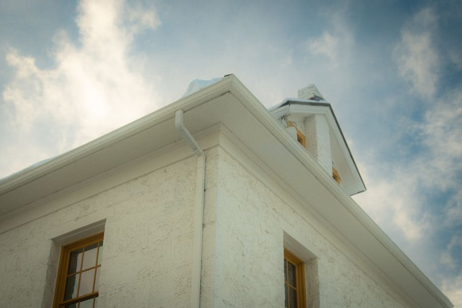

Winnipeg homeowners deal with some of the most punishing weather conditions in Canada. From spring snowmelt that can dump hundreds of litres of water against your foundation in a matter of days, to freeze-thaw cycles that expand and crack older gutters, your eavestroughs take a beating every single year. If your gutters are failing, the damage creeps up quietly — until you're looking at waterlogged soffits, basement flooding, or eroded landscaping. Understanding eavestrough installation Winnipeg prices, and knowing the warning signs that it's time to replace your system, can save you thousands in preventable repairs.

Warning Signs You Need Eavestrough Installation in Winnipeg
Many Winnipeg homeowners put off replacing eavestroughs until obvious water damage has already set in. Use this diagnostic checklist to assess your system before that happens.
Visual and Structural Red Flags
- Visible cracks or splits: Even small cracks allow water to escape and pool against your foundation or fascia board. In Winnipeg's winters, small cracks expand rapidly under ice pressure.
- Sagging or pulling away from the roofline: Gutters that sag in the middle or are separating from the fascia can no longer direct water away effectively. This is especially common on older Winnipeg homes in neighbourhoods like St. Vital, Transcona, and River Heights where houses were built decades ago.
- Peeling paint or rust stains: Orange streaking on the exterior of your home or on the gutters themselves indicates standing water and rust — a sure sign the metal is deteriorating.
- Seams separating: Sectional gutters, common on homes built before the 1990s, are joined at seams that loosen over time. Once multiple seams fail, patching becomes more expensive than replacing the system with seamless gutters.
- Gutters more than 20 years old: Most aluminum eavestrough systems have a lifespan of 20–25 years under normal conditions. Manitoba's temperature swings — from -35 C in January to +35 C in July — accelerate wear significantly.
Water Damage Warning Signs Around Your Home
- Water stains or efflorescence (white mineral deposits) on your foundation walls
- Basement moisture or flooding during or shortly after heavy rain
- Eroded garden beds, soil washing away from the base of your exterior walls
- Mould or rot developing on fascia boards or soffits
- Ice dams forming at the roofline each winter, often a sign that gutters are trapping water and allowing it to freeze back under the shingles
If you recognize two or more of these signs, it is time to look seriously at professional eavestrough installation in Winnipeg rather than continuing to patch an aging system.
Eavestrough Installation Winnipeg Prices: What to Expect
Costs vary based on the size of your home, the material you choose, the complexity of the roofline, and whether you need fascia board repair before installation. Below is a general price breakdown for Winnipeg homeowners in 2026.
| Material / System Type | Estimated Price per Linear Foot | Typical Full-Home Cost (avg. Winnipeg bungalow) |
|---|---|---|
| Aluminum Seamless (standard) | $8 – $14 | $1,200 – $2,200 |
| Aluminum Seamless (heavy-gauge) | $12 – $18 | $1,800 – $2,900 |
| Steel (galvanized or Galvalume) | $14 – $22 | $2,100 – $3,500 |
| Copper | $30 – $50+ | $4,500 – $8,000+ |
| Gutter Guard Addition | $5 – $12 (added cost) | $750 – $2,000 additional |
Factors That Affect the Final Price in Winnipeg
- Home size and roofline complexity: A two-storey home in Tuxedo or Linden Woods with multiple valleys and corners will cost more than a simple bungalow in North End or East Kildonan.
- Fascia repair: If rot or water damage has compromised your fascia boards, they must be repaired or replaced before new gutters can be installed. This can add $300–$800 or more depending on the extent of damage.
- Downspout quantity and routing: Proper downspout placement is critical in Winnipeg where flat or low-grade lots (common in the Red River valley) require careful water management. Additional downspouts or extended underground drainage add to the cost.
- Removal of old gutters: Disposal of your existing system typically adds $100–$300 to the project.
- Seasonal timing: Demand peaks in late April through June as Winnipeg homeowners assess spring snowmelt damage. Booking in late summer or fall can sometimes yield better availability and competitive pricing.
Why Winnipeg's Climate Makes Proper Installation Critical
Manitoba's climate is unforgiving on any exterior system. Proper pitch (slope toward downspouts), secure hanger spacing, and the right gauge of material are not just quality considerations here — they directly affect how your gutters perform through freeze-thaw cycling and heavy spring runoff. A Winnipeg spring can deliver several weeks of sustained snowmelt followed by sudden heavy rainstorms, putting maximum load on your system at once. Inadequately installed gutters will fail under this pressure faster than almost anywhere else in the country.
Seamless vs. Sectional Gutters in the Winnipeg Market
Most reputable Winnipeg installers today work exclusively with seamless aluminum gutters, custom-formed on-site to the exact length of each run. Seamless systems eliminate the joints where leaks begin and hold up far better through freeze-thaw cycles. If a contractor is quoting you sectional gutters for a full replacement, it is worth asking why and whether seamless is available — it usually adds little to the total cost but significantly extends the life of your system.
It is also worth noting that spring storm season in Winnipeg can cause widespread damage across multiple exterior systems at once. If fallen branches or high winds damaged your trees and fences alongside your gutters, local contractors like Fence Installation Winnipeg handle storm-related fence repairs while you deal with eavestrough restoration separately.
Ready to Get an Accurate Eavestrough Installation Quote?
Connect with a local Winnipeg eavestrough specialist who knows Manitoba's climate and can give you a precise, no-obligation price for your home.
Get My Free Quote